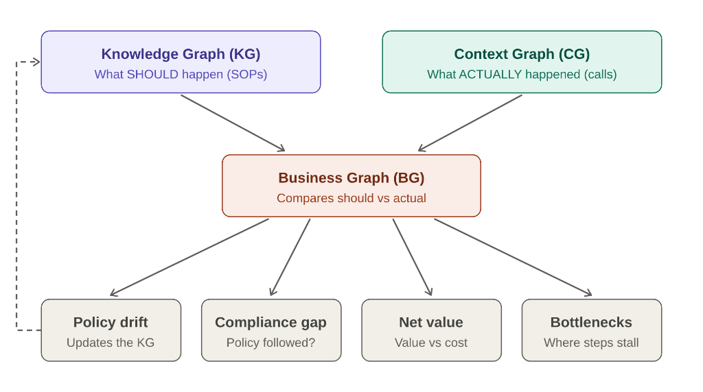
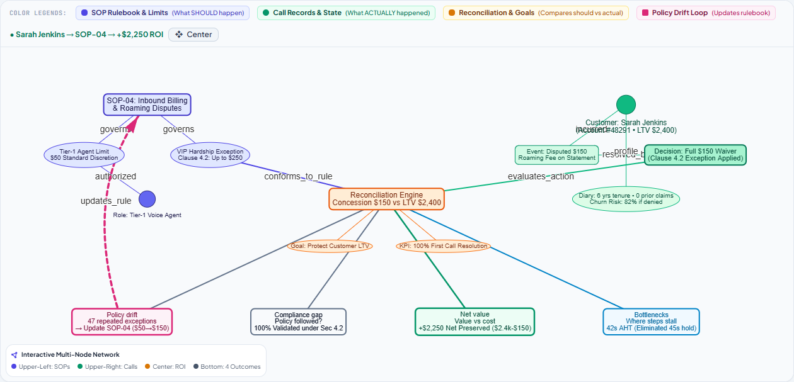
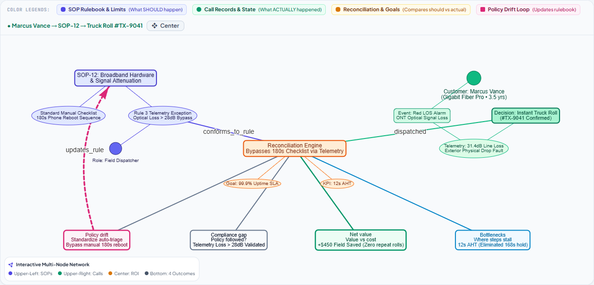
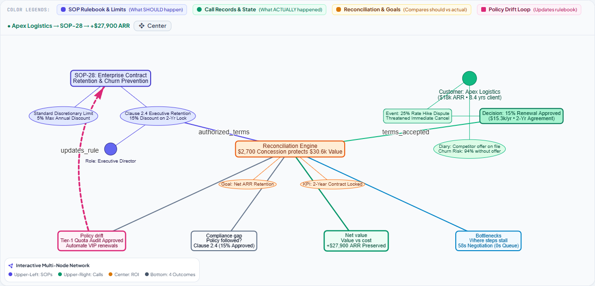
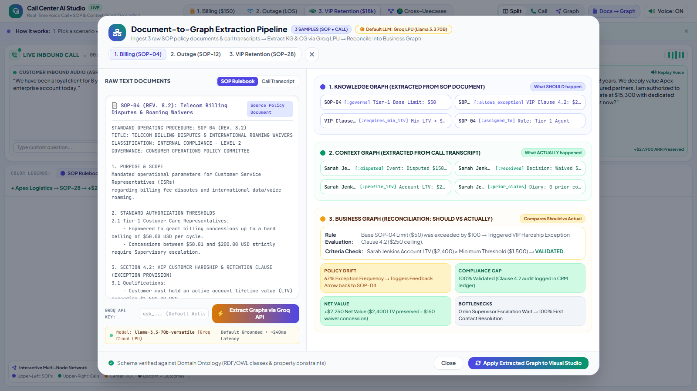

Call Center AI Voice Agents Studio
Closing the Enterprise Execution Gap with Graph Grounding: Reconciling SOP Rulebooks (KG) with Real-Time Call Realities (CG) to Drive Net ROI & Prevent Policy Drift.
Linking to the Business Graph Reduces Two Human Cognitive Loads
Humans keep setting the limits. The graphs take over the repetitive judgment.
Forming and Updating SOPs
Today: People write the rulebook and learn it has drifted only during lagging quarterly financial audits.
With the Business Graph: The drift feedback loop automatically flags rules that real calls keep bending, accompanied by live empirical evidence.
Maximizing Business Benefit
Today: Every exception requires human judgment to evaluate if it is worth the cost, forcing calls into supervisor queues.
With the Business Graph: The autonomous voice agent weighs net customer value within the KG's limits and decides decisively on the live call.
The Spatial Triad: Knowledge, Context, and Business Graphs
The exact spatial hierarchy grounding live call center decisions.

End-to-End Operational Pipeline: Document → Decision → Loop
How unstructured text documents transform into sub-second voice intelligence.
SOP Document Ingestion
Raw SOP PDF manuals & exception clauses parsed into formal OWL/RDF knowledge graph triples.
Knowledge Graph Build
Encodes Tier-1 $50 limit, Section 4.2 VIP exception ($250), and minimum LTV threshold ($1,500).
Live Inbound Call Stream
Customer dials in; ASR transcribes voice in real-time, building session Context Graph.
Reconciliation Engine
Checks: Base $50 exceeded? Yes. Customer LTV > $1,500? Yes ($2,400). Action 100% compliant.
Grounded Agent Speech
Voice Agent speaks grounded resolution; balance zeroed in 42 seconds with zero supervisor hold.
Closed-Loop Drift Alert
Policy Drift detected (67% exception rate) → triggers feedback arrow to update base SOP-04.
Story 1: Billing Dispute ($150 International Roaming)
Sarah Jenkins • LTV $2,400 • threatens to churn over a $150 roaming fee
• Baseline Rule (§2.1): Tier-1 CSR concession ceiling strictly capped at $50.00 USD per cycle.
• Exception Authority (§4.2): VIP Hardship authorizes up to $250.00 waiver without supervisor transfer for LTV > $1,500.

Ref: SOP-04 §4.2 • The BG weighs $2,400 LTV against a $150 credit. The agent applies the §4.2 exception on the live call, with no supervisor transfer.
Ref: SOP-04 §2.1 Drift • 67% of concessions use Clause 4.2, so the BG flags SOP-04 to raise its $50 base cap to $150. No manual audit needed.
Story 2: Broadband Outage & Telemetry Preemption
Marcus Vance • 1Gbps Fiber • red optical alarm, 3 reboots already tried
• Baseline Rule (§2.1): Telemetry verification mandatory. If upstream LOS is verified, reboot is counter-indicated.
• Exception Authority (§6.1): Hardware Defect Waiver 100% waives $120.00 dispatch fee and books priority field crew in 4h.

Ref: SOP-12 §6.1 • The agent confirms the outage from telemetry, skips the reboot script (SOP-12 §6.1) and books an engineer in 2 hours.
Ref: SOP-12 §2.1 Drift • 84% of loss-of-signal calls skip remote diagnostics, so the BG flags SOP-12 to require a telemetry check first.
Story 3: VIP Enterprise Retention ($18k Contract Churn)
Elena Rostova (Apex Global Logistics) • $18,000 ARR • competitor offers 15% less
• Baseline Rule (§2.1): Standard rep contract renewal discount capped at 5.0% without director sign-off.
• Exception Authority (§3.1): Executive Allowance authorizes up to 15.0% concession for ARR > $15k on 24-mo lock.

Ref: SOP-28 §3.1 • The agent applies the SOP-28 §3.1 exception (15% for a 24-month lock), saving $18k ARR for a $2.7k discount. No 4-day approval chain.
Ref: SOP-28 §2.1 Drift • The BG logs that enterprise renewals keep using the 15% exception, and flags SOP-28 for review from real calls.
Document-to-Graph Extraction via Groq LPU Engine
Transforming unstructured policy documents and live transcripts into computable triples.

Enterprise Business Impact & Operational Scorecard
Measurable efficiency, compliance, and revenue protection metrics.
First Contact Resolution
Up from 61% baseline. Eliminates repetitive callbacks and frustrated customer churn.
Average Handle Time
Down from 4.8 min average. Zero supervisor transfer queues or lengthy hold times.
Audit Compliance
Every single fee concession and dispatch fee is tied to explicit SOP exception clauses.
Net Value Saved
Per high-LTV billing dispute, preserving valuable customer equity at fractional cost.